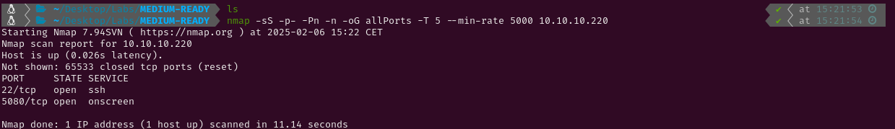

MEDIUM - READY
1. Recon
Nmap
nmap finds two open ports: SSH (22) and onscreen (5080).

The NSE (Nmap Scripting Engine) finds the following information:
- The box is using Ubuntu
- Port 5080 is a HTTP service using nginx.
- The title suggests the main page is a login for GitLab.
- There are 53 disallowed entries in robots.txt

Website - TCP 5080
Accessing the HTTP service I see a login page for the GitLab Community Edition. Checking robots.txt I see there are a lot of disallowed entries but after visiting some of them I realise those routes aren’t useful. Using gobuster I can’t find any hidden files or directories which I can access.


As I haven’t found anything yet, I will create an account (arkett:arketarket) and log in to see if I can get access to the target through any vulnerable feature. Once the account is created, I find in the ‘Help’ page that the GitLab version being used is 11.4.7. After doing some research on known vulnerabilities for that version, I find some exploits to get remote code execution.

2. Gaining Access
After trying a couple exploits, I have found this one which successfully spawns a shell in my netcat listener.


This exploit takes advantage of two GitLab vulnerabilities. The first one (CVE-2018-19585) is a SSRF vulnerability which abuses the GitLab ‘import project’ feature and the second one (CVE-2018-19571) is a RCE via Redis injection. When importing projects, GitLab fetches data from a URL supplied by the user. In vulnerable versions this URL is not validated properly and an attacker can force the server to request internal resources. Using import_url%5D=git://[0:0:0:0:0:ffff:127.0.0.1]:6379/, the exploit makes GitLab connect to its own Redis database. As old Redis versions do not require authentication, the script is allowed to push a malicious job into GitLab’s background job queue. This job makes GitLabShellWorker execute arbitrary code on the server. Once the malicious job is added, it is executed sending a request project_post = request.post(url_project, data=exploit_form, verify=False).
3. Privilege Escalation
After getting access to the target, the first thing I do is listing the contents of / and I see a .dockerenv file which suggests that I’m on a container. After looking around the system for a while, I discover that there is a backup directory inside of /opt. Using grep I find a password (wW59!ZKMbG9+*#h) in one of the files of that directory and after trying to log into other users in the system, I find that it is the root password.


The root.txt file is not inside /root because I am still inside the container. However, while checking the files in /opt/backup, I found that the docker-compose.yml file has the privileged option set to true. This likely means that I can see all devices and partitions using lsblk.


As I thought, running lsblk I see that the target system is in sda2, so I can use mount to copy the file system into a directory and take the root flag from there. To gain command execution in the target system, chroot could be used to create an isolated environment and execute commands from there.